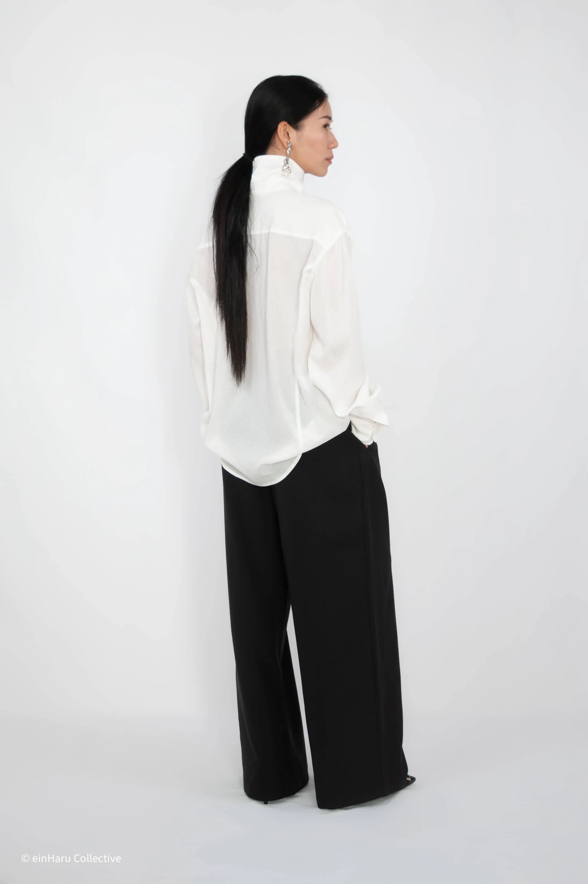
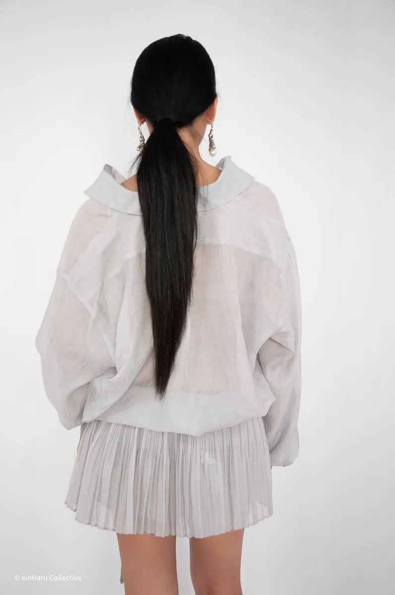

Korean Minimalist Fashion: A Guide for European Shoppers
Korean fashion has a visibility problem in Europe. Most of what reaches Western audiences is K-pop adjacent: bright colours, logo-heavy streetwear, idol-inspired styling. This is one slice of what Seoul produces, and not the most interesting one.
Korean minimalist fashion from Seoul: architectural silhouettes, muted palettes, considered construction, and how to access it from Europe.

What defines Korean minimalist fashion
Underneath the K-pop visibility, there is a quieter, more considered design culture producing some of the most intelligent womenswear in the world. Architectural silhouettes. Muted palettes. Fabric-first thinking. Construction details that earn a second look without asking for one.
Korean minimalist design shares a few consistent qualities across labels and seasons: architectural silhouettes, a muted and often monochromatic palette, high-quality fabrication, and a willingness to experiment with proportion in ways that Western minimalism rarely does.
Where Scandinavian minimalism tends toward the safe and functional, Korean minimalism is more experimental. Barrel-shaped trousers. Exaggerated sleeves. Wrap constructions. Unusual collar treatments. Asymmetric closures. All within a colour palette of black, ivory, charcoal, and occasional deep tones. The silhouette does the work that colour or print would do elsewhere.

The construction detail is the tell. A Korean minimalist piece doesn't just look simple: it has a reason for every seam, every closure, every hem. The wrap neckline on the Bijo Shirt. The shearling panel on the Wrap Shirt. These aren't decorative; they're design decisions that change the silhouette entirely.
Where Korean minimalist fashion comes from
The designers driving this aesthetic largely operate outside the traditional fashion week circuit. Many run small studios and sell directly through their own sites or through carefully curated boutiques. Small runs. Considered fabrics. No fast fashion logic.
Many Seoul-based designers trained at institutions like Hongik University or studied abroad in London or Antwerp, bringing rigour and conceptual grounding that sets their work apart. The result is fashion that thinks, with a clear point of view about proportion, material, and the relationship between clothing and the body.
This is why Korean minimalist pieces tend to photograph differently to fast fashion: they have an interior logic that reads on camera.

Bijo Shirt, einHaru Collective
An oversized shirt with a high wrap neckline that shifts the whole silhouette. Nylon-Tencel blend, smooth, breathable, drapes without clinging. Made in Korea.
Shop now →Korean vs Japanese minimalism: what's the difference
Both share restraint and a preference for quality over quantity. But they diverge in important ways.
Japanese minimalism (think Issey Miyake, Comme des Garçons) tends toward conceptual extremity. The garment as object. Deconstruction. Material as statement. It can feel unwearable in daily life unless you commit fully to the aesthetic.
Korean minimalism is more pragmatic. The pieces are designed to be worn on the street and in daily life, while still carrying that considered, architectural quality. The proportion is interesting but the garment is functional. This is why Korean minimalist fashion integrates more easily into a European wardrobe than its Japanese counterpart.
For a deeper look at how these two aesthetics intersect in practice, read the Seoul–Berlin Minimalist Style Guide →

Shearling Wrap Oversized Shirt, einHaru Collective
A sheer lightweight shirt with a separate shearling wrap panel. Wear both together or apart; the panel changes the proportion and texture entirely. Made in Korea.
Shop now →How to shop Korean minimalist fashion from Europe
Until recently, accessing this kind of fashion from Europe meant paying high international shipping from Korean sites or hoping a larger retailer stocked it. A few options now exist.
Direct from Seoul designers' own websites: possible, though shipping costs and customs fees can add 20–30% to the price, and returns are complicated.
Through curated boutiques based in Europe that import and stock Korean independent labels. This is the cleanest option: EU consumer rights, local return policies, no customs surprises.
einHaru Collective operates exactly this model: a Berlin-based boutique curating pieces from independent designers in Seoul and Tokyo, shipping EU-wide. Returns handled under standard EU consumer law.
For the full picture on buying Korean fashion in Europe, read: Where to Buy Korean Fashion in Europe →
What to look for when buying Korean minimalist fashion
Fabric and construction are the things to check. Natural or elevated materials over standard polyester. Seams that are finished. Fastenings that are solid. A silhouette that matches the product photography when the garment is on a real body rather than pinned and clipped.
Korean sizing runs smaller than European sizing as a general rule. Always check garment measurements listed on the product page rather than relying on S/M/L labels. einHaru lists measurements in centimetres for every piece; see the sizing guide → for how to use them.
Featured in this article
Continue reading: Where to Buy Korean Fashion in Europe or return to the Editorial hub.